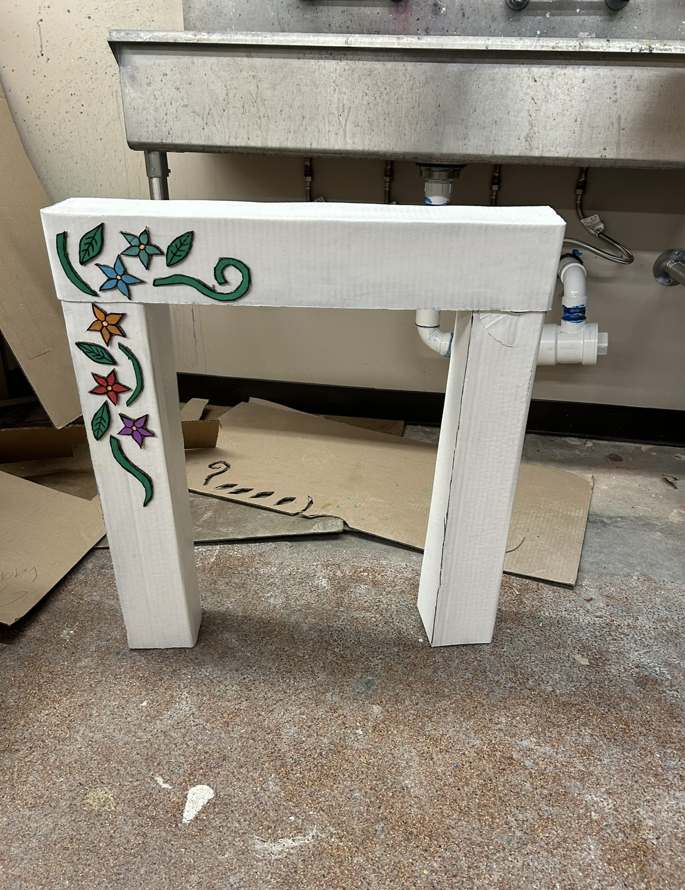
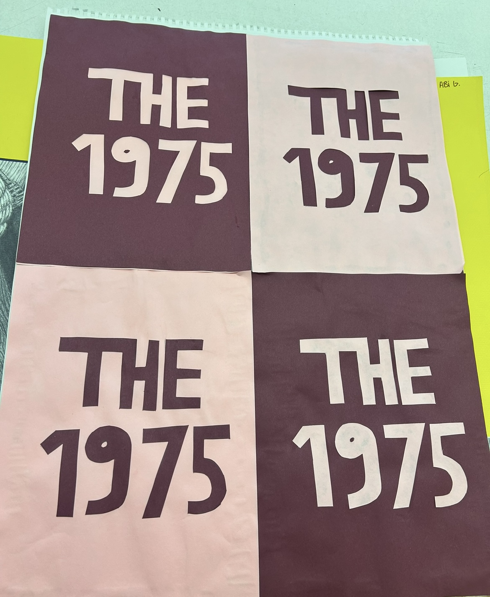
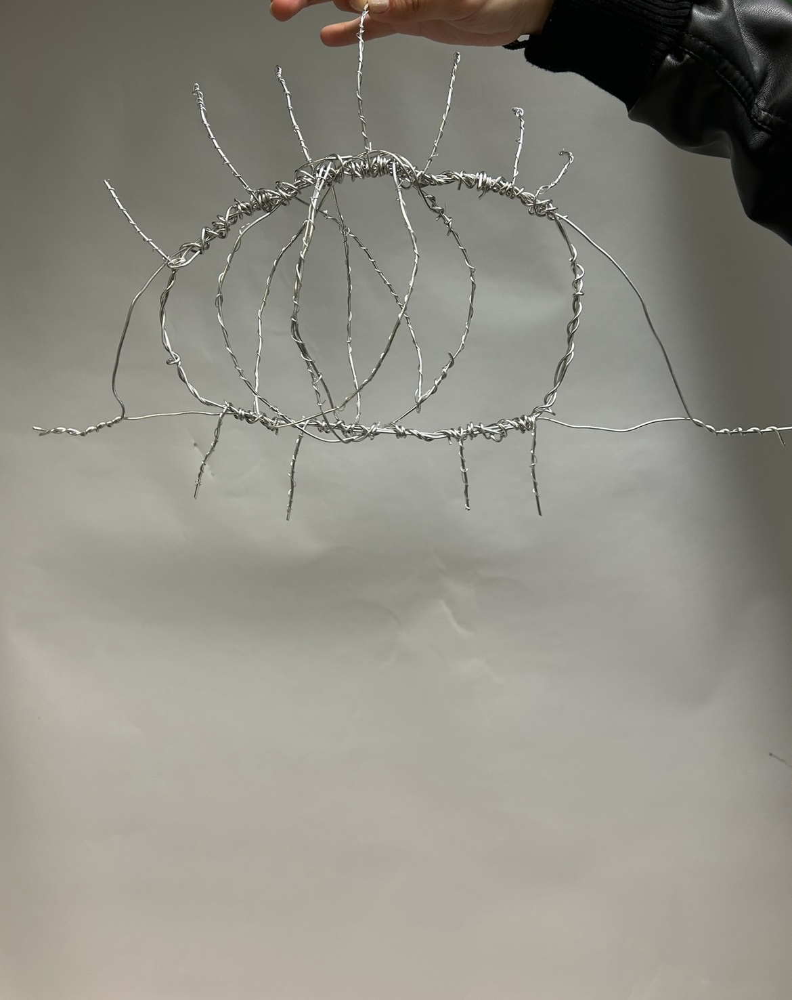
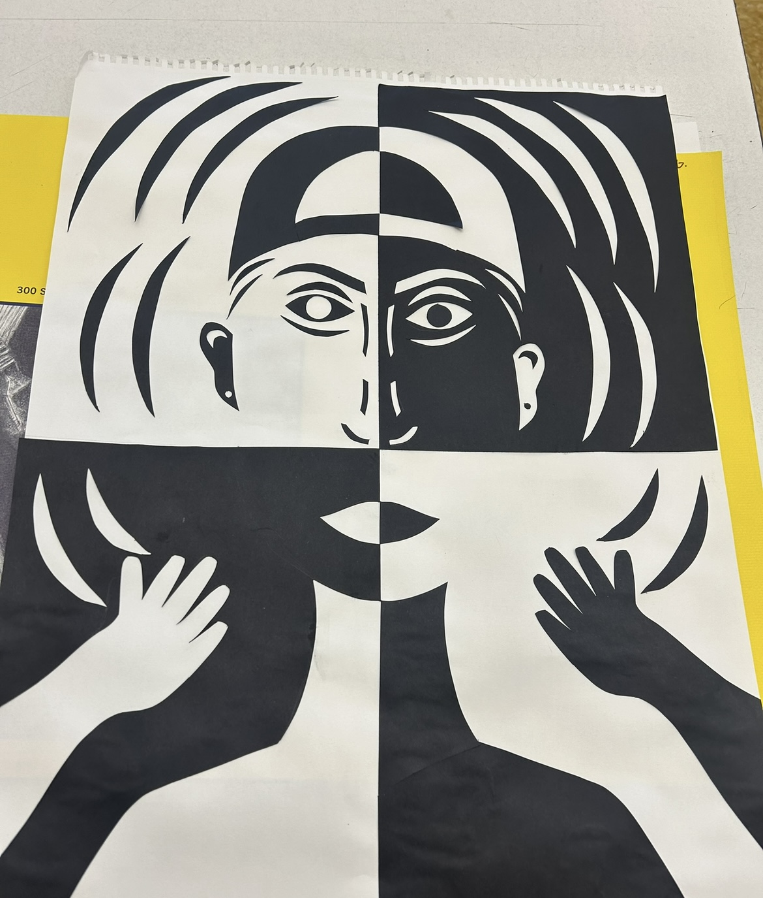
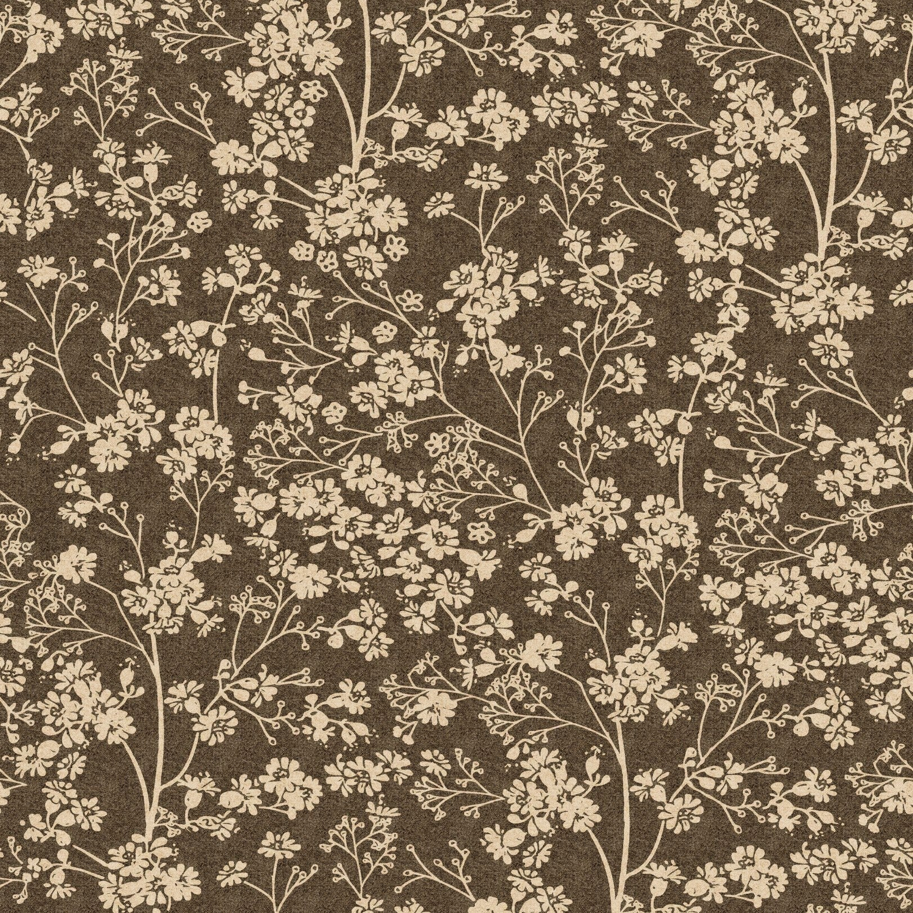

My name is Abigail Garcia and I am a sophomore currently attending North Central College in Naperville, IL. I am currently studying Design and studying with a minor in International Business. My design interest range and vary in a good amount of creation and imagination. I love being able to use my ideas and creations to create something new and unique.





Abigail Garcia
Email: argarcia3199@noctrl.edu
Learn more about web design at W3Schools.